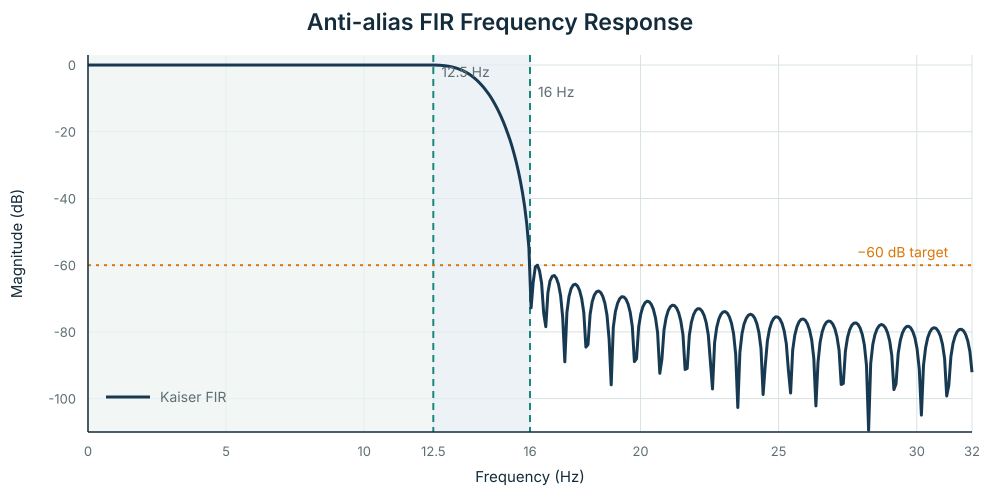
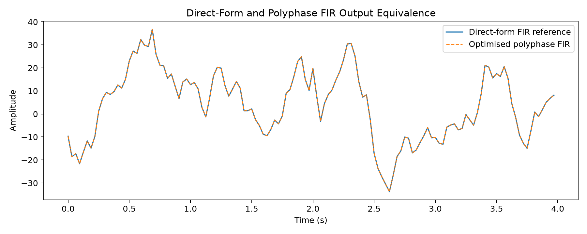
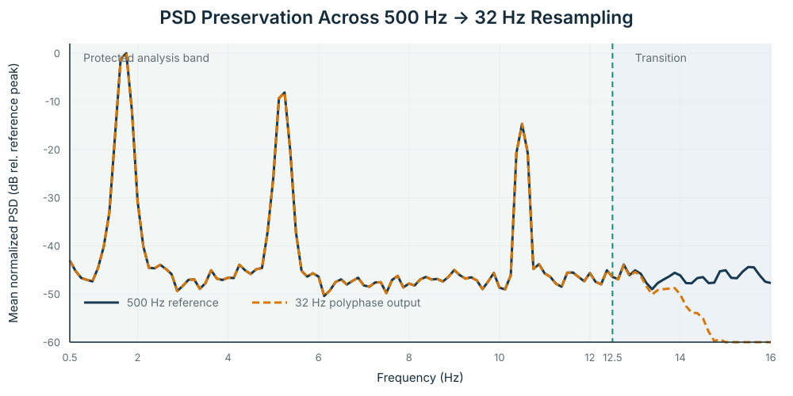
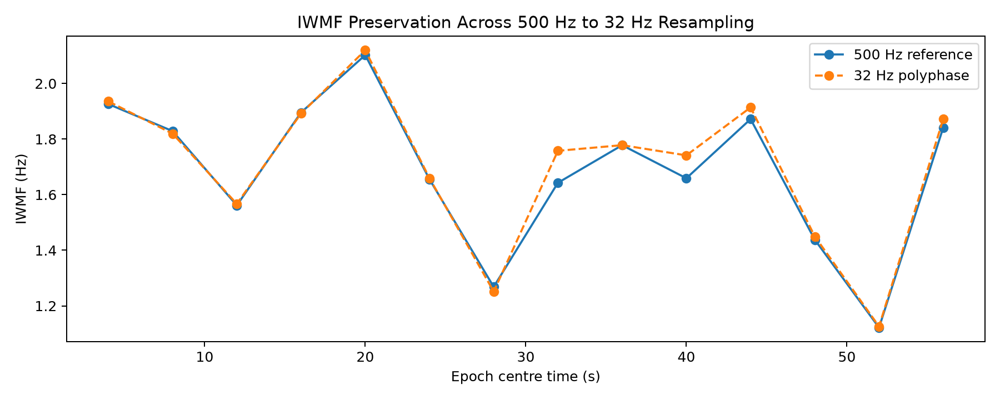

Digital signal processing · Multirate systems · EEG
Preserve the signal.
Remove the wasted computation.
A 500 Hz → 32 Hz EEG resampling pipeline designed from explicit anti-alias constraints, then validated for numerical equivalence, spectral preservation, and computational efficiency.
01 · Engineering question
Downsampling is only safe when the new Nyquist limit is treated as a design constraint.
Reducing EEG from 500 Hz to 32 Hz can cut storage and downstream computation substantially. But a naïve decimator can fold energy above 16 Hz back into the retained spectrum.
This project therefore treats resampling as a complete system: derive the anti-alias filter from the protected analysis band, implement an efficient polyphase form, and verify what information is preserved after conversion.
0.5–12.5 Hz
The full target analysis band is kept essentially flat.
≥ 16 Hz
The stopband starts at the output Nyquist limit.
Signal + spectrum
Numerical equivalence and multiple spectral descriptors are checked separately.
02 · Multirate architecture
An exact 8/125 rational conversion.
EEG recording
4 kHz intermediate rate
Kaiser window
retain required phases
1,920 samples / 60 s
Aligned spectral grid: 8 s epochs give
500 / 4000 = 32 / 256 = 0.125 Hz resolution on both branches.03 · Specification-driven filtering
The FIR length comes from the specification—not an arbitrary tap count.

| Response check | Measured |
|---|---|
| Gain at 12.5 Hz | −0.0095 dB |
| Worst passband deviation | 0.0090 dB |
| Gain at 16 Hz | −60.32 dB |
| Minimum stopband attenuation | 59.89 dB |
04 · Polyphase optimisation
Same FIR response. Far less unnecessary work.
approximate FIR MACs for the 30,000-sample validation recording
approximate FIR MACs after phase decomposition
operation-count comparison
median wall-clock benchmark; machine-dependent

05 · Spectral preservation
Validation asks more than one frequency-domain question.
Median normalized-PSD correlation across 8 s epochs.
Median relative RMSE.
Median error across 0.5–4, 4–8, and 8–12.5 Hz.
RMSE, with correlation 0.9911.


06 · Engineering ownership
What I designed and verified.
Multirate design
Defined the exact 8/125 conversion and the protected spectral band.
Filter derivation
Derived the Kaiser FIR from passband, stopband, and attenuation requirements.
Implementation check
Built direct-form and polyphase paths and verified numerical equivalence.
Spectral validation
Compared PSD shape, sub-band power, entropy, SEF95, and IWMF.
Efficiency analysis
Separated theoretical operation-count reduction from measured runtime speed-up.
Reproducibility
Added synthetic demo data, regression tests, CI, and a public executable pipeline.
Scope: this is a signal-processing and implementation study. It does not claim clinical performance, diagnostic validity, or preservation of frequencies above the 32 Hz output Nyquist limit.